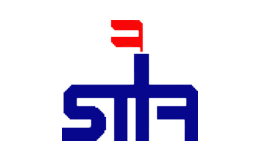

A propos de mois :
Stage PFE :
La société Tunisienne des Industries de raffinage (STIR) a choisi de se diriger vers l’automatisation de ses différentes unités dans le but d’améliorer sa compétitivité. A cet égard, elle nous a proposé un projet de fin d’études portant sur le thème de « Développement et intégration d’un système SCADA pour le stockage du pétrole brut »
Parcours académique
Diplôme de Baccalauréat
contacter moi via :
| AhmedKhalil | |
| AhmedKhalil | |
| +216 54 140 550 |